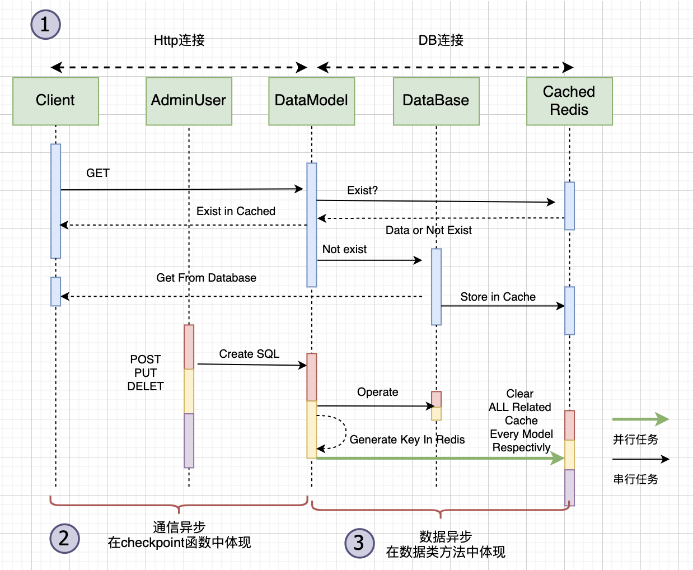

fastapi异步框架几个问题
基本问题
还记得我们再「通信篇」绘制的时序图吗？用它表示一次用户执行的逻辑是没问题的，但实际实现中，我们真的能这样写代码吗？这里有两个基本问题：
- 并发访问问题，如何实现多人同时访问你的博客web进程？
- 如何避免io阻塞，从而充分利用cpu的时间片？
第一个问题做过web开发的都很熟悉了，他的解决方案很多，因为这是软件发展中必须面对的问题：
- os级别，io多路复用机制，成熟的为linux的epoll机制，
nginx便是基于此实现访问并发。 - 编程语言使用多线程解决，以
Flask为例，使用本地线程解决线程安全问题。 - 编程语言使用异步编程解决，以
nodejs为例，promise+回调的方式。python就是以asyncio为代表的异步生态圈。
第二个问题其实跟第一个问题是一个意思，把对象换成cpu即可。Frodo解决第一个问题使用的是类似asyncio事件循环的uvloop循环，他包装成了一个机遇ASGI协议的web服务器uvicorn,他可以启动多个ASGI标准写的app，内置一套事件循环实现并发访问。
1 | uvicorn main:app --reload --host 0.0.0.0 --port 8001 |
重点是Frodo对于第二个问题的解决，这些都是在程序细节中体现出的。
问题分析：哪里存在IO阻塞
我们拿「通信篇」中CRUD的通信逻辑举例，我们先标注出IO阻塞的地方, 然后对应到程序设计中的环节，再来思考在实现中怎么解决。

图中标注出了三类io场景，并有的是串行的需求，有的是并发（可以并发）的需求。我来分别解释下：
- 第一类： 网络的连接和断开，http是基于tcp的可靠传输协议，建立连接的过程也是耗时的io操作。数据库的连接是网络连接或套接字文件读写类的链接，也是io耗时的。这些代码主要在web中的checkpoin函数，在
Frodo的views目录下。 - 第二类： 通信异步是指客户端发送请求，等待数据准备好到返回的过程，这部分等到的时间其实是后端的数据io操作，cpu不应被这段时间占用。这部分代码在
Frodo的mdoels下。 - 第三类： 数据异步是指跟数据库操作等待数据返回所需的时间消耗。这部分时间也应该还给cpu。
上述的很多场景必须是串行完成的，比如建立数据库连接–>数据操作–>断开连接。也有一些场景（主要是不涉及数据一致性的场景）可以是并行的，如缓存的更新与删除，因为KV数据库不涉及关系的联立，可以并行地删除。
解决方案
第一类：连接耗时
数据库的连接与退出同步中都会想到使用带with关键字的连接池，异步为了这一连接过程可以「被等待」或者说交出执行权给主程序，需要使用async关键字包装一下，并实现异步上下文的方法__aenter__, __aexit__.
1 | import databases |
事实上，aiomysql已经帮助我们实现了类似的功能，但很遗憾aiomysql不能和sqlalchemy配套使用，database是一个简单的异步的数据库驱动引擎，能执行sqlalchemy生成的sql。
第二类：通信耗时
这点能否异步直觉决定了web应用的响应速度，异步下的checkpoint函数本身为async def关键字的协程，再由uvloop调度。对于此类函数的要求是对于阻塞操作一律使用await等待，看个例子：
1 |
|
你可能注意到了有些函数如verify_password并没有等待他，因为他是计算任务，不可被等待。我们只需按照逻辑把io耗时操作等待即可。
第三类：数据操作耗时
这体现在异步ORM方法的设计上，database + sqlalchemy的实现范例如下：
1 |
|
以更新数据数据为例，涉及到的等待。同步的ORM框架像pymysql在db.execute(...)这类方法上式不可以被等待的，直接是阻塞的，异步的写法里要等待他的结果，带来的好处便是等待的时间执行权归还主程序，使其可以处理其他事务。
并行的实现
异步下的并行是指很多io操作并不涉及数据一致性，可以并行处理，比如删除没有关系的数据，查询若干数据，更新没有关系的数据等，这些都可以并行。异步中也允许这些并行，借助asycio.gather(*coros)方法实现，这个方法将传递进去的协程都放入事件循环队列，逐个执行类似coro.send(None)的操作，因为协程立马退出，所以所有协程可以立马「同时」被唤醒等待，达到并行的效果。
类设计中使用的tricks
本节的内容是在使用python异步中的一些小技巧，可以帮助我们实现更好的设计。
将类的@property属性序列化
序列化对象很常见，尤其是想在缓存中存储对象时需要序列化。对象的有些属性是用异步@property完成的，跟其他属性不同，他们需要特殊的调用：
1 | class Post(BaseModel): |
这个property有些是异步的，每次使用此属性时都需要content = await post.html_content, 而不带async和await的属性可以直接访问content = post.html_content。
这就给我们的序列化方法带来了麻烦。 我们想让类拥有一个知道自己有哪些异步property的功能，从而能在BaseModel中实现统一的序列化方法（在子类分别实现序列化方法是不现实的）。
让类附加一个partials的属性，存储需要等待的property， 对于python，控制类的行为（注意是类的创建行为，不是实例的创建行为）需要改变其元类，我们设计一个叫PropertyHolder的元类，让他的行为控制所有数据类的生成：
1 | class PropertyHolder(type): |
他的功能是过滤出我们所需要的@property, 直接付给类的properties属性。
接下来就是改变BaseModel的生成元类：
1 |
|
Base是ORM的基类，他本身的元类也被改变（意味着不是type）,如果直接改变它则会让我们的数据类型丧失ORM的功能，两全其美的办法是创建一个新的类同时继承Base和PropertyHolder, 使这个类成为新的混合元类。（*好绕啊，这里的套娃现象我也不想的，我会慢慢找到更好的方案的…*）。
tricks: 类的元类如何拿到？ 调用
cls.__class__获取他基于的元类。记住，python中类本身也是对象。他的创建也是受控制的。
关于fastapi
好了，Frodo第一个版本的核心设计思路已经介绍完了，前面的叙述中，我很少提fastapi，因为异步web本身和框架是没关系的，这套内容换成sanic,aiohttp,tornado甚至是Django都是一样的，只是具体的实现手段不同，比如Django的异步是基于他自己设计的channel实现的。
但fastapi也有他的特别之处，设计思想兼容并蓄，也思考了很多，在开发中我强烈推荐使用的几个地方：
- 数据模式
schema的设计，配套pydantic的类型检查，让python这门动态语言变得更加可读、调试更加容易、语法更加规范，我相信这是未来的趋势。 Depends的设计，我们曾想过把复用的逻辑封装成类、函数、装饰器，但fastapi直接在参数上做文章，令我惊讶，他在参数上就代替了上下文、多参数、表单参数、认证参数等。- 兼容同步写法，包含
WSGI，使用同步的技术库搭配fastapi完全没问题，他允许同步函数的存在，原因便是他基于的ASGI认为自己是WSGI的超集，应当兼容两种写法。 - 配套swagger-doc, 后端福利，使得你不需要花费时间学习OpenAPI 语法便可顺利做出前后端人员都能用、都能理解的调试平台和文档，省时省力。
Frodo的三篇介绍到此就完结了，靠课余、科研时间之外的空隙完成的项目难免漏洞百出。但一个月的战线后总算是完成了第一个版本。未来的目标是星辰大海，新语言的加入、多服务的拆分、虚拟化部署都需要时间的检验，努力吧~！